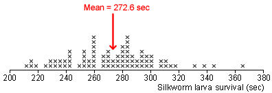

| Parameter | Sample statistic | Error |
|---|---|---|
| population mean, µ | sample mean, |
|
| population proportion, π | sample proportion, p | p - π |
Error in an estimate
When we use a summary statistic from a random sample to estimate a population parameter, the estimate will usually not be exactly the same as the parameter. The error is the difference between the parameter and its estimate.
| Parameter | Sample statistic | Error |
|---|---|---|
| population mean, µ | sample mean, |
|
| population proportion, π | sample proportion, p | p - π |
Silkworm poisoning
Silkworms must be killed after spinning their cocoons since the silk is damaged when the moths break free. An experiment was conducted to estimate the mean survival time of silkworm larvae after poisoning with sodium arsenate.

Since we are not interested in the specific 80 silkworms, we estimate that the population mean survival time is 272.6 seconds.
How big is the estimation error likely to be?